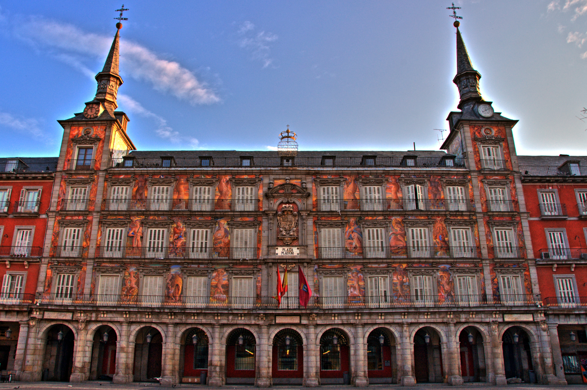

Time and weather
Madrid hour
Rain
Madrid weather now
Imagery credits
Return to Earth
Casa de la Panadería
Whole building
Survey walk
3D reconstruction
Courtyard photograph
Compare with photograph
Walk
West wall
South wall
East wall
Close approach
Side angle
Record north frontage
Loading the arcade…
Reference photograph · Felipe Gabaldón

3D reconstruction · matched camera